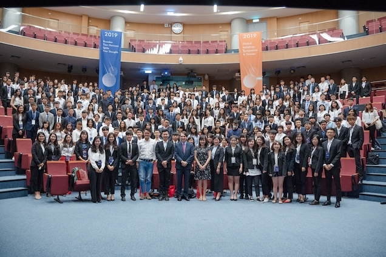

Past conference
GIS 2019
Shifts and Shocks

Topics
- The Great Wealth Transfer
- Paradigm Shifts
- No-Age Society
- Destination Green
Action project
- FinTech
- Future Education
- Smart Healthcare
- Eco-Echo
Notable speakers
- Partner and Co-founder of ReD Associates:Filip Lau
- Blockchain Punk:Rafael Schultz
- Legal Officer, Manaj&Associates:Egzon Gajtani
GIS 2018
Race the Tide

Topics
- Artificial intelligence
- Platform economy
- Micro power
- Personalized learning
Action project
- Artificial intelligence
- Platform economy
Notable speakers
- Ko, Wen-je: Mayor of Taipei
- Ray Lu: Chairman of Junyi Academy
- Audrey Tang: Minister without Portfolio
GIS 2017
Rice to Prominence
Topics
- Blockchain
- Low-Carbon Economy
- New Media
- Extremism
Action project
- Blockchain
- Low-Carbon Economy
- New Media
- Extremism
Notable speakers
- Vitalik Buterin: Founder of Ethereum
- Kuan, Chung-Ming: Distinguished Professor, Department of Finance, NTU
- Matan Field: Co-founder and CEO of DAOstack
GIS 2016
Redefine the Limitations
Topics
- Social Enterprise
- Women Enpowerment
- Globle Disease Management
- Innovative Agriculture
Action project
- Data Mining
- Internet of Things
- Argumented Reality
- Virtual Reality
Notable speakers
- Fawzia Koofi: The first female second deputy speaker of the Wolesi Jirga
- Jonathan Schwarts: Director of the Asian Studies Program at SUNY New Paltz
- Sarah Liu: Founder of Little Girl Big Dream, Co-founder of Gemini 3
GIS 2015
From Individual to Influential
Topics
- Innovation & Entrepreneurship
- Integration Platform
- Different Education
- Open Source and Makers
Action project
- Big Data
- Smart City
- Internet of Things
- Third-Party Payment
Notable speakers
- Lee Yuan-tseh: Immediate Past President of International Council for Science
- Tsai Ing-wen: Chairperson of Democratic Progress Party
- Yeh Ping-cheng: Director of MOOC, National Taiwan University
GIS 2014
Stand Up,Stand Out!
Topics
- Detecting the Trends
- Sustaining Competitive Advantage
- Stand Out to Become Outstanding
Action project
- Leisure Industry
- Entrepreneurship
- Data & Analytics
- Life Science and e-Health
Notable speakers
- Prakhar Bhartiya: Founder of Youth Alliance
- Gregor Hackmack: Co-Founder of Parliament Watch
- Peter Lemmens: General Manager of IMEC Taiwan
GIS 2013
Strategy Under Competition
Topics
- Deconstruct
- Benefiting Yourself by Benefiting Others
- Maximize under competitiveness
Notable speakers
- Wei Kuo: Principal of City University of Hong Kong
- Jhao-Hsiung Huang: Chairman of CyberLink
GIS 2012
Innovation and Change
Topics
- Detecting a New Trend
- Analyzing a New Trend
- Taking the Lead
Notable speakers
- Barry Lin: Chairman of Quanta Computer
- Sheng-Yi Dai: Chairman of Wowprime
- Charles Tsai: Co-Founder of Global Youth Fund
GIS 2011
What is the Catch Catching at Web?
Topics
- Killer Apps and the Soft Power of Nations
- Who Controls the Internet?
- Individual Agents on the Internet
Notable speakers
- John. M. Leitner: Professor of Seoul National University
- Justin O’Connor: Professor of The University of Queensland
GIS 2010
Emergence of New Giants: Evolution or Revolution
Topics
- Natural Resources: A Golden Apple for Emerging Countries?
- Emerging Countries at the Crossroads: Adoption of Green Technology
- When East Meets West: New perspectives under Asian Culture Expansion
Notable speakers
- Timmy Yip: Recipient of 2001 Academy Award in Art Direction
- Paul Hsu: Founder of Epoch
GIS 2009
Challenges and Opportunities, the Global Economy in the Transition Phase
Topics
- Rethinking of Corporate Social Responsibility and Social Entrepreneurship
- Find the Next Wave to Ride On - New Business Strategies in the Changing World
- Bliss or Misery? - Contemplating the Engagement at Cultural Forms and Economic Progress
Notable speakers
- Michael Braungart: Professor of Leuphana Universität Lüneburg
- Joseph Tseng: General Manager of Crystal Internet Venture Funds.L.P.